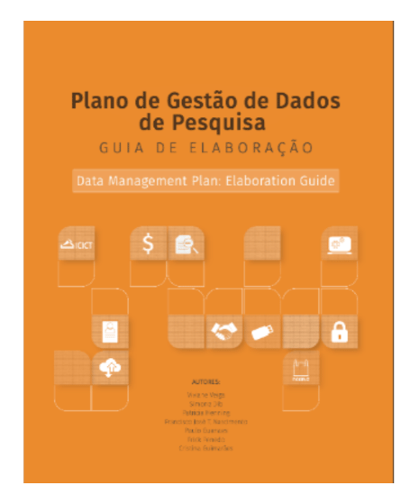
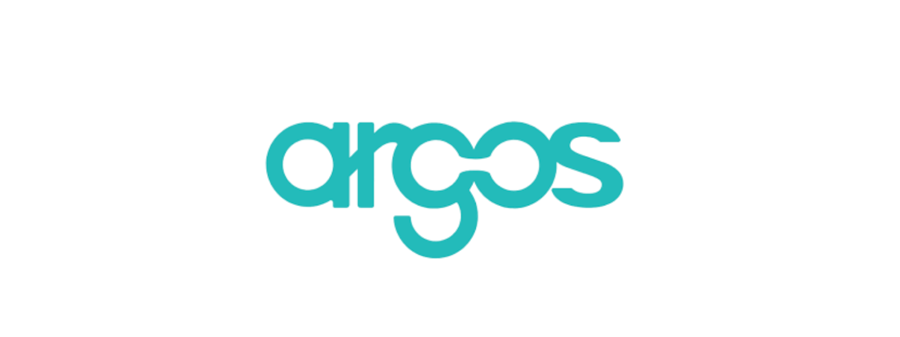

Módulo 4 . Aula 6
Planos de Gestão de dados (PGD)
Módulo 4 . Aula 6
Planos de Gestão de dados (PGD)
 Objetivos da
aula
Objetivos da
aula
Nesta aula você será apresentado ao Plano de Gestão de Dados, documento de planejamento e apoio à gestão de dados de pesquisa. Ao final, você será capaz de:
- Conhecer as principais características de um PGD e etapas de preenchimento/atualização.
- Reconhecer as vantagens de adotar o PDG no cotidiano da atividade de pesquisa, favorecendo seu reúso e evitando perda de dados, o que acarreta prejuízos para pesquisadores e instituições.
- Conhecer as principais plataformas de elaboração de PGDs, incluindo o FioDMP da Fiocruz e a perspectiva futura de planos acionáveis por máquina.
Políticas de financiadores de pesquisa
A gestão ativa de dados é fundamental para garantir sua qualidade, viabilizando, sempre que possível, seu futuro reúso, compartilhamento e abertura. Recentemente, diversas agências de fomento à pesquisa e financiadores privados passaram a exigir a elaboração de um Plano de Gestão de Dados (PGD) como condição para o financiamento de projetos de pesquisa.
O PGD é um documento formal, dinâmico (passível de atualização), que contém perguntas orientadoras para estimular os pesquisadores a planejarem, de maneira intencional, a gestão de dados ao longo de todo seu ciclo de vida — período que se estende além da execução e finalização da pesquisa.
Essa inovação visa estimular a gestão ativa de dados de modo que se torne parte da cultura científica. Por isso, os financiadores disponibilizam modelos/templates específicos que devem ser preenchidos pelos pesquisadores em, pelo menos, três momentos.
![A imagem é uma colagem retangular sobre um fundo branco, contendo doze logotipos de organizações internacionais, sendo seis em cada linha. Na primeira linha: Horizon 2020 (União Europeia, TDR (UNICEF/PNUD/Banco Mundial/OMS)), NIH (National Institutes of Health - EUA, SNF (Swiss National Science Foundation, NSF (National Science Foundation))) - EUA, Bill & Melinda Gates Foundation. Na Segunda linha: Wellcome, NERC (Natural Environment Research Council - Reino Unido), MRC (Medical Research Council - Reino Unido, NWO (Netherlands Organisation for Scientific Research)), BSRC (Biotechnology and Biological Sciences Research Council - Reino Unido) e The Research Council of Norway.](../media/modulo4/aula6-img1.png)
Existem vários motivos para elaborar um PGD. Nesse vídeo, um avaliador de projetos da National Science Foundation (NSF) explica como projetos com excelência científica deixam de ser financiados devido à falta de um PGD.
No vídeo a seguir, somos apresentados a diversas situações cotidianas de perda de dados que resultam em transtornos para pesquisadores e prejuízos para as instituições de pesquisa. Observe como um PGD bem elaborado pode diminuir esses danos.
Why write a Data Management Plan?
Destaques do PGD
O PGD é um elemento essencial para garantir a qualidade de um projeto de pesquisa. Ele não é um documento estático, mas sim uma ferramenta que evolui, ganhando mais precisão e substância à medida que o projeto de pesquisa avança.
A atualização do PDG é necessária conforme o projeto de pesquisa se desenvolve, visto que, no início de sua execução, talvez não se conheçam todos os dados a serem produzidos ou coletados, nem o seu potencial de reúso.
Por isso, ele deve ser:
![Infográfico em formato circular, dividido em quatro quadrantes coloridos. O ciclo é lido no sentido horário, começando pelo quadrante superior esquerdo. No centro do círculo, há duas setas brancas curvas que formam um movimento cíclico. Cada quadrante está conectado a um retângulo externo que descreve o momento em que aquela fase ocorre. Detalhamento dos Quadrantes: 1. Elaborado (Superior Esquerdo),na cor verde-água e com o texto interno: 'Elaborado'. Descrição externa em um retângulo laranja: 'No momento da formulação do projeto'. 2. Entregue (Superior Direito) na cor laranja com o texto interno: 'Entregue'. Descrição externa em um retângulo laranja: 'Na candidatura de um financiamento ou após a aprovação inicial do projeto de pesquisa.'' 3. Revisto e atualizado (Inferior Direito) na cor amarelo e com o texto interno: 'Revisto e atualizado'. Descrição externa em um retângulo laranja: 'Durante o andamento do projeto em suas etapas intermediárias.' 4. Finalização (Inferior Esquerdo) na cor laranja-escuro e o texto interno: 'Finalização'.Descrição externa em um retângulo laranja: 'Ao término do projeto.'](../media/modulo4/aula6-img2.png)
Principais tópicos de um PGD
A Science Europe — associação que reúne 37 organizações de 28 países europeus, está entre as mais importantes entidades públicas que financiam e realizam pesquisas científicas no continente — estabeleceu diversos requisitos essenciais para a elaboração de templates de PGDs. Em 2021, a versão revisada e ampliada, Practical Guide to the International Alignment of Research Data Management – Extended Edition, apresentou requisitos básicos para PGDs, critérios para a seleção de repositórios confiáveis e orientações para pesquisadores cumprirem exigências.
Entenda os principais pontos solicitados por financiadores públicos e privados, nacionais e internacionais, para o bom planejamento e organização da gestão de dados.

No Brasil, existem diversas questões legais e éticas que devem ser consideradas antes de se realizar o compartilhamento de dados. Para apoiar a elaboração de PGDs alinhados aos Princípios FAIR e à legislação nacional, uma equipe multidisciplinar elaborou a publicação Plano de Gestão de Dados de Pesquisa – PGD: Guia de Elaboração.
A maioria dos formulários/templates para elaboração de PGDs possui sete categorias, que são apresentadas no guia:
1.1 - Quais dados serão coletados ou criados?
1.2 - Como os dados serão coletados ou produzidos e como poderão ser reusados?
2.1 - Que padrão de metadados acompanhará os conjuntos de dados?
2.2 - Que tipos de documentação acompanharão os conjuntos de dados?
3.1 - Como serão gerenciadas as questões éticas e os códigos de conduta?
3.2 - Como questões legais de direitos de propriedade intelectual (DPIs) e autoria serão gerenciadas? Qual legislação é aplicável?
4.1 - Como serão feitos os backups e o armazenamento dos conjuntos de dados e dos metadados durante e após o processo de pesquisa?
4.2 - Como serão gerenciados o acesso e a segurança dos dados?
5.1 - Quais dados serão selecionados para retenção, compartilhamento e/ou preservação em longo prazo?
5.2 - Qual é o planejamento para a preservação em longo prazo dos conjuntos de dados?
6.1 - Como e quando os dados serão compartilhados?
6.2 - Existem possíveis restrições ao compartilhamento do conjunto de dados?
7.1 - Quem serão os responsáveis pela gestão dos dados?
7.2 - Quais recursos serão requeridos para a entrega do plano?
Vantagens de elaborar um PGD
- Planejamento prévio e organização antecipam questões que influenciam todo o ciclo de vida dos dados, para além do período de execução da pesquisa.
- Ajuda a prevenir ou reduzir a probabilidade de contratempos, como perda ou uso inadequado dos dados.
- Facilita a localização e acesso dos dados, visando sua reutilização.
- A documentação fornece detalhes valiosos sobre os dados, favorecendo sua compreensibilidade e reúso futuro — seja pela própria equipe, seja por terceiros.
- Viabiliza a continuidade da pesquisa mesmo após a saída de membros da equipe ou a entrada de novos pesquisadores.
- A documentação é essencial para a validação e reprodutibilidade de resultados de pesquisa por terceiros — princípio fundamental da prática científica.
- Garante a atribuição de crédito aos seus autores, que passam a ser devidamente citados e referenciados por pesquisadores que reutilizarem os dados.
- Favorece a disponibilização aberta dos dados, especialmente em projetos de pesquisa financiados com recursos públicos, desde que não haja restrições de segurança ou dados sensíveis.
- Evita a duplicação de esforços e investimentos, especialmente na coleta ou tratamento de dados.
- Viabiliza o compartilhamento de dados, fomentando a colaboração aberta e impulsionando avanços na pesquisa.
Ferramentas de elaboração de PGD
Diversas plataformas disponibilizam modelos/templates de PGD que atendem aos requisitos dos principais financiadores da pesquisa científica. Alguns exemplos são:

Conheça suas principais características:
- Registro livre e gratuito: acesso sem custos para todos os usuários.
- Guias de preenchimento: disponibiliza orientações formuladas pelos financiadores para a elaboração dos PGDs.
- Exemplos práticos: apresenta modelos de PGDs já preenchidos como referência.
- Fases de desenvolvimento: abrange todas as etapas para o desenvolvimento da pesquisa, desde antes da coleta até o relatório final do projeto.
- Ferramentas de colaboração: permite a elaboração on-line com recursos para trabalho em equipe.
- Exportação em diversos formatos: facilita a exportação dos documentos em múltiplos formatos.
Entenda no vídeo a seguir a elaboração de um Plano de gestão.
E o Plano de Gestão de Dados da Fiocruz?
Desde 2017 a Fiocruz tem promovido uma série de debates coletivos sobre a adoção da Ciência Aberta. Publicou em 2020 a Política de Gestão, Compartilhamento e Abertura de Dados para Pesquisa, que envolve o desenvolvimento de um modelo/template próprio de Plano de Gestão de Dados.
A proposta de PGD para a Fiocruz foi elaborada pela equipe do Instituto de Comunicação e Informação Científica e Tecnológica em Saúde (Icict), em colaboração com o Grupo de Trabalho de Ciência Aberta (GTCA), coordenado pela vice-presidência de Educação, Informação e Comunicação (VPEIC).
Essa ferramenta foi testada por pesquisadores das diversas áreas do conhecimento nas quais a fundação atua. Em outubro de 2022 foi lançado o FioDMP, sistema que contém formulários com diversas perguntas que auxiliam o pesquisador na organização e na gestão de dados ao longo de todo o ciclo de vida da pesquisa. Atualmente, além da Fiocruz, ele é utilizado por diversas instituições no Brasil.
Observe o Plano de Gestão de Dados da Fiocruz
A futura geração de PGDs: acionáveis por máquina
As ferramentas para a elaboração de PGDs normalmente disponibilizam perguntas abertas, que, uma vez respondida, são enviadas pelos pesquisadores aos financiadores.
São documentos administrativos que facilitam o planejamento e a organização da pesquisa, mas que ainda não são plenamente reconhecidos como parte dessa atividade
Nos últimos anos, cresce o entendimento de que os PDGs reúnem informações valiosas para todas as partes interessadas na pesquisa, incluindo:
- Financiadores.
- Comitês de ética.
- Especialistas em Direito.
- Pesquisadores.
- Editores.
- Operadores de repositórios.
- Provedores de infraestrutura.
- Equipe de apoio à pesquisa.
- Administradores institucionais etc.
Como resultado, começam a surgir investimentos para torná-los acionáveis por máquina. Ou seja, estruturados de maneira mais automatizada de modo que todos os atores e sistemas envolvidos no processo de gestão de dados possam participar de forma colaborativa.
A futura geração de PGDs, que já está em desenvolvimento, irá incorporar fluxos de trabalho colaborativos, favorecendo a interoperabilidade entre ferramentas e sistemas de pesquisa, reduzindo tarefas manuais, e melhorando a qualidade das informações sobre gestão de dados.
10 princípios para um PGD ser acionável por máquina
- Integrar o PGD aos fluxos de trabalho daqueles que participam do ecossistema de dados.
- ermitir a ação de sistemas automatizados em nome das "partes interessadas" (stakeholders).
- Elaborar políticas que sejam direcionadas tanto para máquinas quanto para pessoas.
- Descrever — para máquinas e humanos — os componentes do sistema de gestão de dados.
- Usar identificadores persistentes e vocabulários controlados.
- Adotar um modelo/template comum de dados para PGDs acionáveis por máquina.
- Disponibilizar PGD para uso humano e por máquina.
- Apoiar a avaliação e o monitoramento da gestão de dados.
- Tornar os PGDs documentos atualizáveis, vivos e versionáveis.
- Tornar os PGDs acessíveis publicamente.
Fonte: Miksa et al. (2019).
Apesar de todos os esforços para melhorar a eficácia dos PGDs, a literatura nacional e internacional vem apontando problemas na qualidade dos Planos elaborados pelos pesquisadores. Alguns indicadores de qualidade, identificados em estudos preliminares realizados por pesquisadores da Fiocruz, devem ser integrados à elaboração de PGDs. Entre eles podemos destacar maior envolvimento das agências de fomento, avaliação automática da qualidade dos PGDs, adoção de métricas FAIR e PGDs acionáveis por máquina. Essas ações são fundamentais para superar os desafios atuais e promover uma gestão eficaz de dados de pesquisa.
Acesse os Diálogos ABEC
Como citar esta aula:
PRÍNCIPE, Pedro; VEIGA, Viviane Santos de Oliveira. Plano de Gestão de Dados. In: JORGE, Vanessa; CLINIO, Anne (coord.). Programa de Formação Modular em Ciência Aberta. Módulo, 4. Gestão, compartilhamento e abertura de dados. Aula 6 (2ª edição). Rio de Janeiro: Fiocruz, 2025. Disponível em: https://mooc.campusvirtual.fiocruz.br/rea/ciencia-aberta/modulo4/aula6.html. Acesso em: 14 nov. 2025.